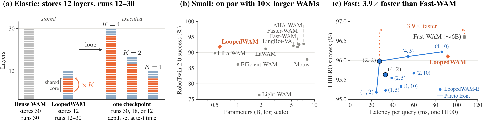
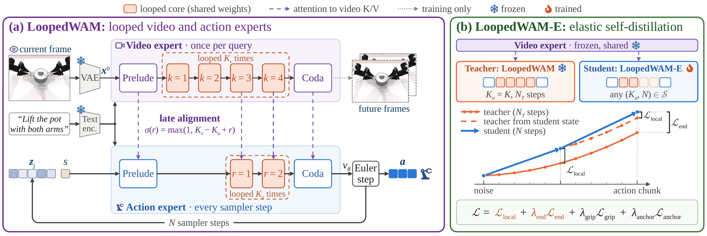
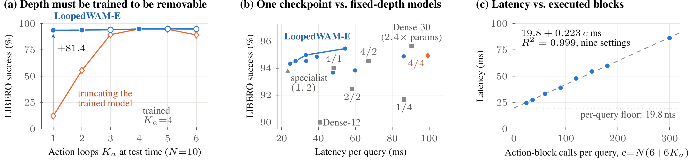
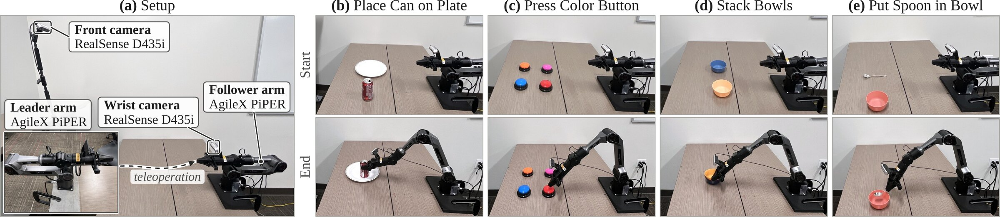

Store 12 blocks, run 30 layers, and choose the depth at test time.
LoopedWAM controlling a real AgileX PiPER arm from a front and a wrist camera. Front view shown; uncut episodes from one evaluation session.
Abstract
World action models (WAMs) couple generative video modeling with robotic action prediction but typically require large video and action transformers, limiting deployment efficiency. We present LoopedWAM, a compact WAM that recurrently applies a shared six-block core in each expert, executing 30 transformer layers while storing only 12 blocks per expert. To account for their asymmetric inference costs, the video and action experts can operate at different depths: visual features are computed once per query, whereas action computation repeats at every sampling step. We further propose elastic self-distillation, which trains a single elastic checkpoint, LoopedWAM-E, across action-depth and sampling-step budgets. With only 0.58B policy parameters and no robot pretraining, LoopedWAM achieves 96.1% success on LIBERO, 91.9% on RoboTwin 2.0, and 52.2% on RoboCasa-GR1, while using 7.4× less peak GPU memory than Fast-WAM under matched inference measurements. On LIBERO, LoopedWAM-E achieves 96.0% success in 27.6 ms or 95.2% in 24.7 ms on an H100, providing multiple accuracy–latency operating points from a single checkpoint; with two sampling steps and four action loops, it stays within 0.5 points of LoopedWAM on all three benchmarks. Ablations demonstrate that weight-shared depth preserves competitive performance, while aggressive action-depth reduction requires explicit budget-aware training. On a real AgileX PiPER arm, LoopedWAM succeeds in 71.3% of 80 trials across four tasks.

Method
A query runs the video expert once and the action expert once per sampling step. Latency follows the number of blocks executed in sequence; memory follows the number of blocks stored. LoopedWAM controls the two independently.

A 3-block prelude, a 6-block shared core, and a 3-block coda, copied from a Wan2.1 video model. Looping the core four times recovers the donor's 30 layers with 12 stored blocks: 0.58B parameters in total.
Video depth is paid once per query, action depth at every sampling step, so the two experts loop a different number of times. Action loop r attends to video loop σ(r) = max(1, Kv−Ka+r), so even one action loop sees the deepest visual features.
One student, LoopedWAM-E, is trained for Ka ∈ {1, 2, 4} action loops and N ∈ {2, 5, 10} sampling steps. Targets come from the teacher started at the student's own intermediate states, so the student learns to correct its own errors.
Cost of one policy query
So LoopedWAM-E keeps the video expert at full depth (Kv = 4) and makes only the action loops Ka and the steps N adjustable.
Elastic inference
Pick the number of action loops and sampling steps at deployment. Every setting below is the same LoopedWAM-E weights, evaluated on LIBERO (6,000 episodes each) with latency on one H100 at batch size 1.
| Ka | N | Block calls | Latency (ms) | Mem. (GB) | Spatial | Object | Goal | Long | Avg. |
|---|
*Fast-WAM re-evaluated by us with the released checkpoint under the same protocol.

Truncating the trained model to a single action loop gives 12.3% on LIBERO; the elastic student keeps 93.7% at the same setting.
With 60 action-block calls each, (Ka, N) = (4, 2) beats (1, 5) by 0.4, 2.1, and 5.0 points on LIBERO, RoboTwin 2.0, and RoboCasa-GR1.
At two steps and four action loops, a fifth of the teacher's action-block calls, the student stays within 0.5 points of its teacher on all three benchmarks.
Looping 12 stored blocks to 30 layers closes 87% of the LIBERO gap between Dense-12 (90.0%) and Dense-30 (95.6%), without adding parameters.
Benchmarks
No robot pretraining. Prior results are taken from their papers unless marked with *, which we re-evaluated with the released checkpoints under our protocol.
| Method | Params | Robot PT | Spatial | Object | Goal | Long | Avg. |
|---|---|---|---|---|---|---|---|
| Vision-language-action models | |||||||
| OpenVLA-OFT | 7B | ✓ | 97.6 | 98.4 | 97.9 | 94.5 | 97.1 |
| π0 | 3.3B | ✓ | 96.8 | 98.8 | 95.8 | 85.2 | 94.2 |
| π0.5 | 3B | ✓ | 98.8 | 98.2 | 98.0 | 92.4 | 96.9 |
| GR00T-N1.6 | 3.3B | ✓ | 97.7 | 98.5 | 97.5 | 94.4 | 97.0 |
| SmolVLA | 0.45B | ✗ | 90.0 | 96.0 | 92.0 | 71.0 | 87.3 |
| RD-VLA | 0.5B | – | 92.0 | 99.0 | 96.0 | 84.8 | 93.0 |
| World action models | |||||||
| Motus | 8B | ✓ | 96.8 | 99.8 | 96.6 | 97.6 | 97.7 |
| LingBot-VA | 5.3B | ✓ | 98.5 | 99.6 | 97.2 | 98.5 | 98.5 |
| Cosmos Policy | 2B | ✗ | 98.1 | 100.0 | 98.2 | 97.6 | 98.5 |
| LaWAM | 2.3B | ✓ | 99.4 | 99.6 | 98.4 | 97.0 | 98.6 |
| LiLa-WAM | 0.5B | ✗ | 98.0 | 98.8 | 97.2 | 94.2 | 97.1 |
| Light-WAM* | 1.9B | ✗ | 96.7 | 98.9 | 96.6 | 90.9 | 95.8 |
| Fast-WAM* | ~6B | ✗ | 97.5 | 99.3 | 96.3 | 93.5 | 96.6 |
| Faster-WAM* | ~6.3B | ✗ | 99.0 | 99.6 | 98.2 | 98.1 | 98.7 |
| Ours | |||||||
| LoopedWAM | 0.58B | ✗ | 96.9 | 99.5 | 97.9 | 90.1 | 96.1 |
| LoopedWAM-E (Ka=4, N=2) | 0.58B | ✗ | 97.2 | 99.3 | 97.5 | 88.5 | 95.6 |
| LoopedWAM-E (Ka=2, N=2) | 0.58B | ✗ | 97.8 | 99.1 | 97.8 | 89.2 | 96.0 |
Our models and * rows: 40 tasks × 50 initial states × 3 seeds = 6,000 episodes per model. Params exclude the frozen VAE and text encoder. Robot PT: pretraining on robot data.
| Method | Params | Robot PT | Clean | Randomized | Avg. |
|---|---|---|---|---|---|
| Vision-language-action models | |||||
| π0 | 3.3B | ✓ | 65.9 | 58.4 | 62.2 |
| π0.5 | 3B | ✓ | 82.7 | 76.8 | 79.8 |
| X-VLA | 0.9B | ✓ | 72.8 | 72.8 | 72.8 |
| World action models | |||||
| Motus | 8B | ✓ | 88.7 | 87.0 | 87.8 |
| LingBot-VA | 5.3B | ✓ | 92.9 | 91.6 | 92.2 |
| AHA-WAM | 7.2B | ✗ | 93.4 | 92.2 | 92.8 |
| Fast-WAM | ~6B | ✗ | 91.9 | 91.8 | 91.8 |
| Faster-WAM | ~6.3B | ✗ | 92.8 | 92.3 | 92.6 |
| LaWAM | 2.3B | ✓ | 92.6 | 89.8 | 91.2 |
| Efficient-WAM | 1B | ✗ | 86.7 | 85.7 | 86.2 |
| Light-WAM | 1.9B | ✗ | 76.4 | 76.3 | 76.4 |
| LiLa-WAM | 0.5B | ✗ | 90.5 | 89.0 | 89.8 |
| Ours | |||||
| LoopedWAM | 0.58B | ✗ | 92.1 | 91.7 | 91.9 |
| LoopedWAM-E (Ka=4, N=2) | 0.58B | ✗ | 91.3 | 91.6 | 91.5 |
| LoopedWAM-E (Ka=2, N=2) | 0.58B | ✗ | 90.6 | 90.6 | 90.6 |
50 bimanual tasks, one model, 100 episodes per task in each setting. LoopedWAM is the best model below 2B parameters.
| Method | Params | Avg. success |
|---|---|---|
| GR00T-N1.6 | 3.3B | 47.6 |
| StarVLA-GR00T | 4B | 47.8 |
| Being-H0.7 | 3B | 49.2 |
| THAW-VLA | 0.8B | 50.5 |
| DiT4DiT | – | 50.8 |
| VP-VLA | 2×4B | 53.8 |
| TwinBrainVLA | 2×4B | 54.6 |
| LDA-1B | 1.6B | 55.4 |
| ABot-M0 | 4B | 58.3 |
| ACE-Ego-0 | 4B | 72.8 |
| Ours | ||
| LoopedWAM | 0.58B | 52.2 |
| LoopedWAM-E (Ka=4, N=2) | 0.58B | 52.4 |
| LoopedWAM-E (Ka=2, N=2) | 0.58B | 51.6 |
24 tabletop tasks for a GR1 humanoid (29-D actions), 50 rollouts per task for our models. Rollout counts of prior methods follow their papers (THAW-VLA: 20; LDA-1B: 51; GR00T-N1.6: not stated).
| Method | Params | Ka | N | Mem. (GB) | Latency (ms) | Speed-up | LIBERO | RoboTwin |
|---|---|---|---|---|---|---|---|---|
| Prior world action models | ||||||||
| Fast-WAM* | ~6B | – | 10 | 15.25 | 107.5 | 1.0× | 96.6 | 91.8 |
| Fast-WAM* | ~6B | – | 2 | 15.32 | 37.1 | 2.9× | 96.0 | 90.1 |
| Faster-WAM* | ~6.3B | – | 10 | 12.76 | 72.6 | 1.5× | 98.7 | 92.6 |
| Light-WAM* | 1.9B | – | – | 4.38 | 21.8 | 4.9× | 95.8 | 76.4 |
| Dense controls (same Wan2.1 donor) | ||||||||
| Dense-30 | 1.42B | – | 10 | 3.79 | 90.5 | 1.2× | 96.3 | – |
| Dense-30-E | 1.42B | – | 2 | 4.33 | 33.9 | 3.2× | 95.9 | – |
| Dense-12 | 0.58B | – | 10 | 2.09 | 40.8 | 2.6× | 94.0 | – |
| Ours | ||||||||
| LoopedWAM | 0.58B | 4 | 10 | 2.05 | 91.8 | 1.2× | 96.1 | 91.9 |
| LoopedWAM | 0.58B | 4 | 2 | 2.09 | 35.0 | 3.1× | 95.3 | 91.2 |
| LoopedWAM-E | 0.58B | 4 | 2 | 2.78 | 33.2 | 3.2× | 95.6 | 91.5 |
| LoopedWAM-E | 0.58B | 2 | 2 | 2.68 | 27.6 | 3.9× | 96.0 | 90.6 |
| LoopedWAM-E | 0.58B | 1 | 2 | 2.58 | 24.7 | 4.4× | 95.2 | 89.3 |
One shared harness: one H100, batch 1, mean over 500 queries, from raw observation to actions. Mem.: peak GPU memory (VAE included, text encoder not). Speed-up relative to Fast-WAM* at its native 10 steps. Light-WAM predicts the chunk in one forward pass.
| Model | Kv | Ka | Params | LIBERO | RoboTwin-10 |
|---|---|---|---|---|---|
| Dense-12 (12 layers) | – | – | 0.58B | 90.0 | 77.3 |
| LoopedWAM | 1 | 4 | 0.58B | 91.7 | 79.6 |
| LoopedWAM | 2 | 2 | 0.58B | 92.5 | 78.9 |
| LoopedWAM | 4 | 1 | 0.58B | 94.0 | 81.0 |
| LoopedWAM | 4 | 2 | 0.58B | 94.5 | 82.4 |
| LoopedWAM (default) | 4 | 4 | 0.58B | 94.9 | 81.4 |
| Dense-30 (30 layers) | – | – | 1.42B | 95.6 | 83.6 |
Shorter ablation schedule (10 LIBERO epochs). At equal parameters, video loops (4/1) beat action loops (1/4) by 2.3 points at 1.8× lower latency: video depth is paid once per query.
Real world
A 6-DoF PiPER with a parallel gripper, observed by a front and a wrist RealSense D435i and controlled in joint space (absolute targets for the six joints and the gripper opening). We collect 400 teleoperated demonstrations (100 per task, 25 per button color) with object poses randomized inside a 30×40 cm workspace. LoopedWAM is trained on all four tasks jointly from the same Wan2.1 donor and then distilled into LoopedWAM-E; Fast-WAM* is fine-tuned from its released weights on the same data.

Same policy, same table: the instruction alone decides which button the arm presses. Played at 2× speed.
Uncut successful episodes of LoopedWAM (Kv=Ka=4, N=10), front view left and wrist view right, played at 2× speed.
| Task | Fast-WAM* | LoopedWAM | LoopedWAM-E (Ka=4, N=2) | LoopedWAM-E (Ka=2, N=2) |
|---|---|---|---|---|
| Place can on plate | 14/20 | 14/20 | 14/20 | 13/20 |
| Press color button | 18/20 | 18/20 | 17/20 | 17/20 |
| Stack bowls | 14/20 | 14/20 | 14/20 | 14/20 |
| Put spoon in bowl | 11/20 | 11/20 | 10/20 | 10/20 |
| Total | 57/80 | 57/80 | 55/80 | 54/80 |
| Success (%) | 71.3 | 71.3 | 68.8 | 67.5 |
| Latency (ms) | 150 | 160 | 58 | 46 |
| Mem (GB) | 12.7 | 3.7 | 3.3 | 3.3 |
Successful trials out of 20 per task and method, with randomized object poses; before every trial the arm returns to the same home pose, and a trial succeeds if the instructed end state is reached within 60 s. All models are trained on the same 100 demonstrations per task. *Fine-tuned and evaluated by us. Latency is measured on the robot computer (RTX PRO 6000).
Citation
@article{dao2026loopedwam,
title = {LoopedWAM: Looped World Action Models for Elastic Inference},
author = {Dao, Anh and Liu, Xinxin and Yu, Hang and
Chan Santiago, Jeffrey A. and Shang, Yuzhang},
journal = {arXiv preprint arXiv:2611.25595},
year = {2026}
}